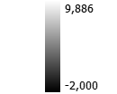

<!doctype html>
<html lang="en">
    <head>
      <title>NDVI - Nord</title>
      <link rel="shortcut icon" type="image/x-icon" href="images/icon.png" />
        <meta charset="utf-8">
        <meta http-equiv="X-UA-Compatible" content="IE=edge">
        <meta name="viewport" content="initial-scale=1,user-scalable=no,maximum-scale=1,width=device-width">
        <meta name="mobile-web-app-capable" content="yes">
        <meta name="apple-mobile-web-app-capable" content="yes">
        <link rel="stylesheet" href="css/leaflet.css">
        <link rel="stylesheet" href="css/qgis2web.css"><link rel="stylesheet" href="css/fontawesome-all.min.css">
        <link rel="stylesheet" href="css/leaflet-measure.css">
        <style>
        html, body, #map {
            width: 100%;
            height: 100%;
            padding: 0;
            margin: 0;
        }
  .legend {
  padding: 6px 8px;
  font: 14px Arial, Helvetica, sans-serif;
  background: white;
  background: rgba(255, 255, 255, 0.8);
  /*box-shadow: 0 0 15px rgba(0, 0, 0, 0.2);*/
  /*border-radius: 5px;*/
  line-height: 24px;
  color: #555;
}
.legend h4 {
  text-align: center;
  font-size: 16px;
  margin: 2px 12px 8px;
  color: #777;
}
        </style>
        <title>NDVI - Nord</title>
    </head>
    <body>
        <div id="map">
        </div>
        <script src="js/qgis2web_expressions.js"></script>
        <script src="js/leaflet.js"></script>
        <script src="js/leaflet.rotatedMarker.js"></script>
        <script src="js/leaflet.pattern.js"></script>
        <script src="js/leaflet-hash.js"></script>
        <script src="js/Autolinker.min.js"></script>
        <script src="js/rbush.min.js"></script>
        <script src="js/labelgun.min.js"></script>
        <script src="js/labels.js"></script>
        <script src="js/leaflet-measure.js"></script>
        <script>
        var map = L.map('map', {
            zoomControl:true, maxZoom:28, minZoom:1
        })
        var hash = new L.Hash(map);
        map.attributionControl.setPrefix('<a href="https://github.com/tomchadwin/qgis2web" target="_blank">qgis2web</a> &middot; <a href="https://leafletjs.com" title="A JS library for interactive maps">Leaflet</a> &middot; <a href="https://qgis.org">QGIS</a>');
        var autolinker = new Autolinker({truncate: {length: 30, location: 'smart'}});
        var measureControl = new L.Control.Measure({
            position: 'topleft',
            primaryLengthUnit: 'meters',
            secondaryLengthUnit: 'kilometers',
            primaryAreaUnit: 'sqmeters',
            secondaryAreaUnit: 'hectares'
        });
        measureControl.addTo(map);
        document.getElementsByClassName('leaflet-control-measure-toggle')[0]
        .innerHTML = '';
        document.getElementsByClassName('leaflet-control-measure-toggle')[0]
        .className += ' fas fa-ruler';
        var bounds_group = new L.featureGroup([]);
        function setBounds() {
            if (bounds_group.getLayers().length) {
                map.fitBounds(bounds_group.getBounds());
            }
            map.setMaxBounds(map.getBounds());
        }
        map.createPane('pane_GoogleSatellite_0');
        map.getPane('pane_GoogleSatellite_0').style.zIndex = 400;
        var layer_GoogleSatellite_0 = L.tileLayer('https://www.google.cn/maps/vt?lyrs=s@189&gl=cn&x={x}&y={y}&z={z}', {
            pane: 'pane_GoogleSatellite_0',
            opacity: 1.0,
            attribution: '',
            minZoom: 1,
            maxZoom: 28,
            minNativeZoom: 0,
            maxNativeZoom: 18
        });
        layer_GoogleSatellite_0;
        map.addLayer(layer_GoogleSatellite_0);
        map.createPane('pane_NDVI_Rabat_1');
        map.getPane('pane_NDVI_Rabat_1').style.zIndex = 401;
        var img_NDVI_Rabat_1 = 'data/NDVI_Rabat_1.png';
        var img_bounds_NDVI_Rabat_1 = [[29.99999999730592,-13.054072891468245],[39.99999999641087,-1.979590485802239e-14]];
        var layer_NDVI_Rabat_1 = new L.imageOverlay(img_NDVI_Rabat_1,
                                              img_bounds_NDVI_Rabat_1,
                                              {pane: 'pane_NDVI_Rabat_1'});
        bounds_group.addLayer(layer_NDVI_Rabat_1);
        map.addLayer(layer_NDVI_Rabat_1);
        var baseMaps = {};
        L.control.layers(baseMaps,{"NDVI_Rabat": layer_NDVI_Rabat_1,"Google Satellite": layer_GoogleSatellite_0,}).addTo(map);
        setBounds();
        L.ImageOverlay.include({
            getBounds: function () {
                return this._bounds;
            }
        });

        var legend = L.control({ position: "bottomright" });

legend.onAdd = function(map) {
  var div = L.DomUtil.create("div", "legend");
  div.innerHTML += "<h4>Légende</h4>";
  div.innerHTML += ""
  
  

  return div;
};

legend.addTo(map);
        </script>
    </body>
</html>
